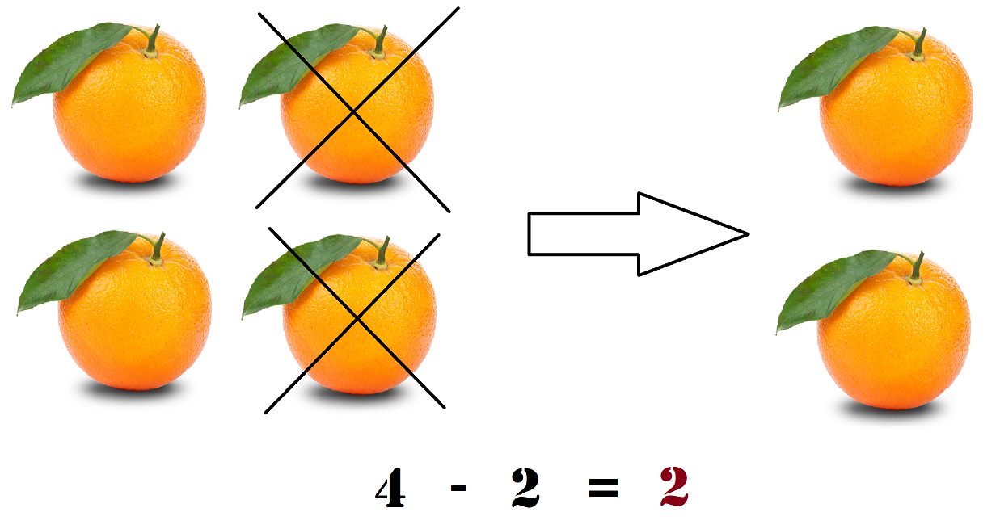

Subtraction is when you take a certain amount away from another amount. It can also be seen as finding the difference between two numbers. It is represented by a - sign. The intial amount is called the minuend, the amount being taken away is the subtrahend, and the answer is the difference.
Subtraction is done by taking away the amount of the subtrahend from the minuend. If the minuend is 6 and the subtrahend is 4, then to take away 4 from 6, you can count 4 numbers down from 6. 4 numbers down from 6 is 2, making 6 - 2 = 4.
Here's another example. If you have 4 oranges, and you take away 2, you have 2 oranges left. Therefore, 4 - 2 = 2.
5 - 1 = ?
6 - 4 = ?
8 - 7 = ?
14 - 6 = ?
12 - 3 = ?
5 - 1 = 4
6 - 4 = 2
8 - 7 = 1
14 - 6 = 8
12 - 3 = 9
For more help, see Khan Academy's Video on Subtraction.